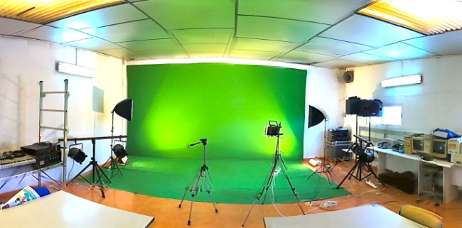
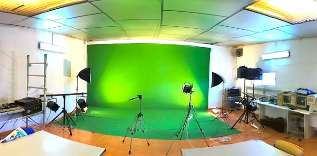

Cinematografía
La cinematografía ha sido siempre una forma de arte única para las películas de todo tipo de género. Aunque la exposición de imágenes en elementos de luz sensible se remonta a la temprana era del siglo XX, las películas pedían una nueva forma de fotografía, y nuevas técnicas estéticas. "Es plasmar una percepción en imágenes en movimiento con o sin sonido, tal vez distorsionada en la mayoría de las realizaciones cinematográficas, pero con un sentido propio y de querer dar una visión más amplia, simple o compleja de la realidad, la historia, el concepto de futuro y de la ficción." (González Victor Raúl)
 7
7En la infancia del largometraje, el cinematógrafo ejercía también el papel de director y la persona que sostenía la cámara. Al tiempo en el que el arte y la tecnología evolucionaron, emergió una separación entre el director y el operador de cámara. Con la llegada de la luz artificial y mayor rapidez en las películas (más sensibles a la luz) y de los avances tecnológicos como la películas en color y las panorámicas, resultó que la producción de películas especialmente en algunos aspectos técnicos requerían personal cada vez más especializado. La cinematografía fue clave durante la era del cine mudo –no había sonido aparte de la música de fondo, no había diálogo– y las películas se basaban en la iluminación, la actuación y la interpretación.

En la industria cinematográfica, el director de fotografía es el responsable de los aspectos técnicos de las imágenes (iluminación, elección de las cámaras, composición, exposición, los filtros, selección de la película), pero trabaja de cerca con el director para asegurar que la estética apoya la visión de la historia contada por el director. Los directores de fotografía son los responsables del cámara, el maquinista y el equipo de iluminadores en plató, y por ello suelen ser llamados directores de fotografía o DFs. Según la tradición inglesa, si el propio DF maneja la cámara, será llamado cinematógrafo. En pequeñas producciones generalmente todas esas funciones las cumple una sola persona. La progresíon de la carrera normalmente implica subir la escala en segundo lugar, para finalmente manejar la cámara.

Set de filmación
Tradicionalmente el término “cinematografía” se ha referido al trabajo con una clase de película hecha con pintura al agua, pero ahora es un sinónimo de la videografía y el vídeo digital debido a la popularidad de la cinematografía digital. El Proceso de imagen moderno también hizo posible modificar imágenes de manera radical. Esto permitió a las nuevas disciplinas aprovechar algunas de las oportunidades que un día fueron del dominio exclusivo de los cinematógrafos.
-
Ofertas de la UNAM para entrar a esa carrera
-
Pagina para saber mas de la cinematografía
Los directores de fotografía toman muchas decisiones creativas e interpretativas en el transcurso de su trabajo, desde la preproducción hasta la postproducción, los cuales afectan el aspecto general de la película. Muchas de esas decisiones son similares a lo que un fotógrafo necesita tener en cuenta cuando va a hacer una foto: el cinematógrafo controla todas las decisiones de la película (from a range of available stocks with varying sensitivities to light and color), la selección de las cámaras, los focos, apertura, exposición y focos. Sin embargo la cinematografía tiene un aspecto temporal (ver persistencia de la visión), no como la fotografía, que es simplemente una imagen quieta. También es más voluminoso y agotador trabajar con cámaras de vídeo, e implica elecciones más complejas. Un cinematógrafo normalmente necesita trabajar en equipo más que un fotógrafo, quien frecuentemente puede ser una sola persona. Como resultado, el trabajo del cinematógrafo también incluye organización logística y gestión personal.
Carreras Universitarias
William Paul Corona Cano

Set de filmación
Tradicionalmente el término “cinematografía” se ha referido al trabajo con una clase de película hecha con pintura al agua, pero ahora es un sinónimo de la videografía y el vídeo digital debido a la popularidad de la cinematografía digital. El Proceso de imagen moderno también hizo posible modificar imágenes de manera radical. Esto permitió a las nuevas disciplinas aprovechar algunas de las oportunidades que un día fueron del dominio exclusivo de los cinematógrafos.
-
Ofertas de la UNAM para entrar a esa carrera
-
Pagina para saber mas de la cinematografía

 2
2 4
4 6
6